来源：https://ev0ft8k60w2.feishu.cn/docx/LoGUdYnnmov6SFx1xescAZGGnkh
我是伟豪，自由职业，今年 8 月，通过航海 0 基础学习 AI + 写作，到 12 月，单单公众号流量主收益累计 6w + ，本次分享一下关于自动化写作的经验，和大家一起更高效成长。
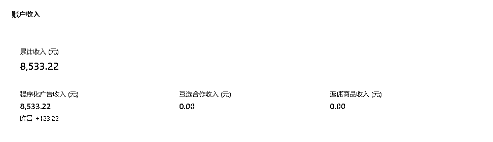
上一篇在生财分享的文章关于 AI 自媒体从 0 - 1 的变现过程：https://t.zsxq.com/15bv056qB
这一次主要分享的内容是如何使用影刀RPA 实现自动化批量写作公众号爆文，影刀 RPA + ChatGPT 公众号爆文赋能提效【基础篇】。
RPA 是 Robotic Process Automation（机器人流程自动化）的简称。我们可以把它理解为：“虚拟机器人”替代人工的一种方式。RPA 不仅可以模拟人类，而且可以利用和融合现有各项技术，实现其流程自动化的目标。
利用软件机器人来执行重复性、规则性和高度可预测的业务流程任务。
结合流量主写作的特点：
因此，设计 RPA 流程来快速生成大量内容草稿，管理 AI 生成的内容。将 RPA 与 AI 批量写作结合应用在公众号内容创作，可以大幅提高效率。
实现 AI + 写作流程自动化的方法大概有以下几种：
本文的内容主要是针对影刀 0 基础用户如何写出一个自动化流程，实现采用影刀 RPA + ChatGPT 实现批量公众号写作，提升写作效率。
请自行到官网注册个人用户账号，并下载安装。本章节介绍常用的基础指令。
1）基础概念
指令：指令是 RPA 软件接收并执行的特定任务或操作。每个指令代表一个步骤，比如点击按钮、输入数据、读取数据等。每个指令可能具有一些参数或配置，以适应特定的操作环境或需求。例如，一个“读取数据”指令可能需要指定数据来源和格式。
流程：多条指令按一定的逻辑排列，构成了一个自动化流程。
我们可以理解为，通过建立一系列的指令构成一个自动化流程来实现我们的写作任务。
从零建立 ChatGPT 提问流程，以情感文写作为案例，实现如何采用影刀 RPA 批量提问并导出答案。
无论是制作 ChatGPT 批量提问的流程还是其他办公流程，我建议先把操作流程梳理清楚，再执行下一步。
我整理的流程如下（ " -> " 符号代表下一步）：
通过找对标文章的方式整理出本次写作的主题（或大纲）并导入到 Excel 里 ->
用浏览器打开chat.openai.com ->
获取 Excel 中的任务列表做循环 ->
提示词 + 主题生成一个完整的提示词 ->
点击 ChatGPT 网站的新建对话窗口 ->
把提示词填入图文框，并点击确认按钮 ->
等待输出 ->
提取答案并保存在 Excel 或 word 中 ->
进入下一次循环等待所有的提问结束
另存为 CSV 格式，用于导入。
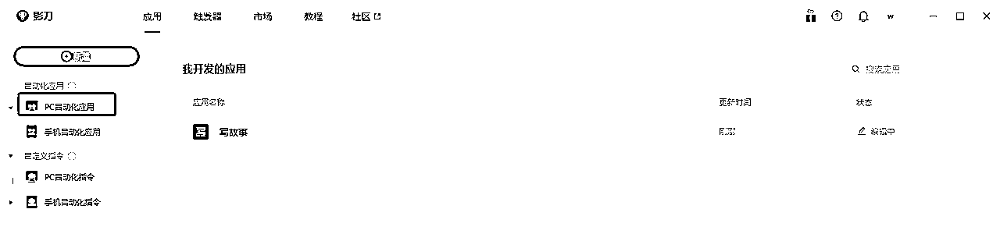
此处采用的指令是【获取已打开的网页对象】，我们只需要提前打开好 ChatGPT 官网并登录，采用指令获取当前的网站对象。
浏览器建议采用 google 浏览器（自行安装影刀插件），调试更加方便。
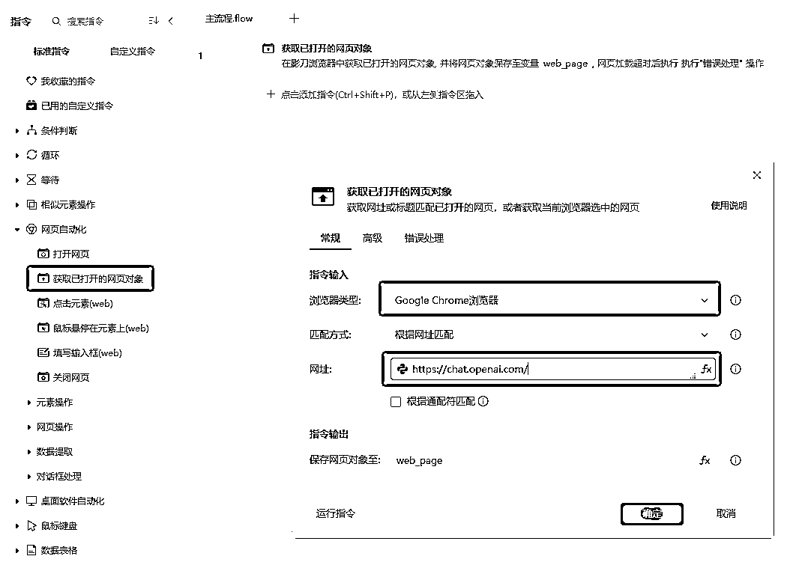
如何调试指令是否生效？
浏览器打开两个标签页，并把另一个非 ChatGPT 设为当前窗口，点击【运行】或【调试】按钮，成功把当前页面切换至 ChatGPT 即为配置成功。后续的调试请参考此操作。
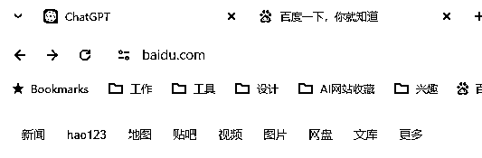
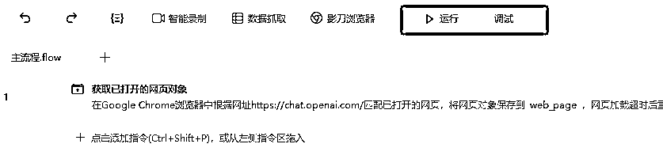
采用【读取CSV数据】指令导入本次写作任务的主题。把数据命名为 "store_list"。
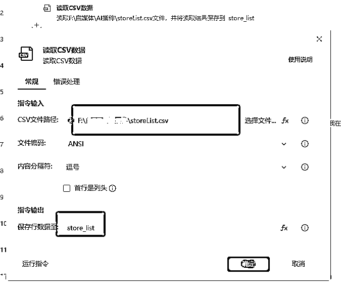
由于我们建立的是批量任务，因此需要采用【循环】指令对每一个提问做重复的提问与采集答案的操作。
新增循环，起始数设置 1，结束数设置为数据表的总行数，步骤五中已用 "store_list" 命名，可设置一个打印日志来调试是否循环成功。
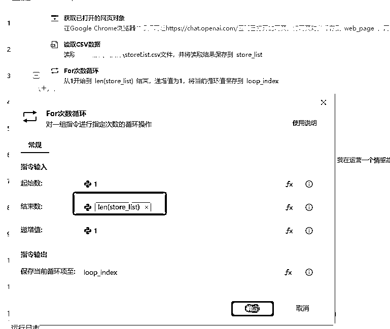
读取当前循环值对应的数据表格内容。
loop_index 变量为当前循环值
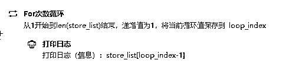
调试结果如下：
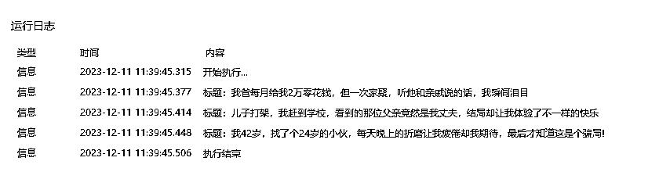
填入提示词前先采用【点击元素】点击打开新对话的按钮。
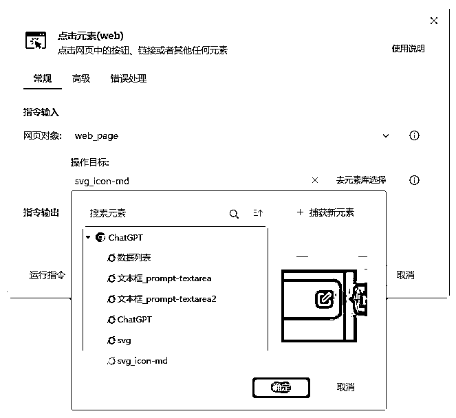
采用【填入输入框】指令把一段重复使用的提示词填入，【操作目标】手动捕捉一下网站的输入框即可。
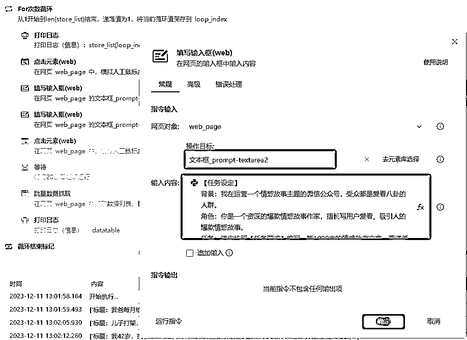
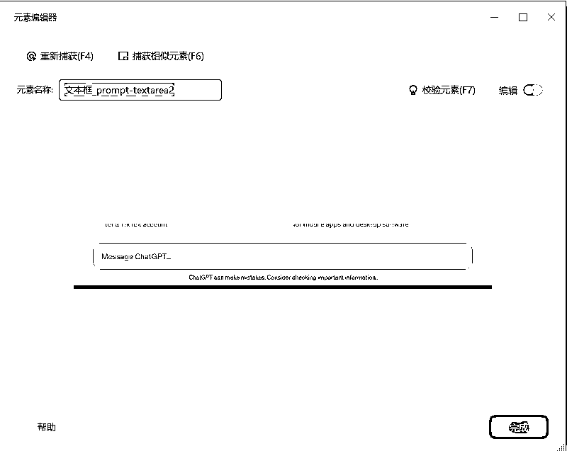
由于提示词是长文本，最好采用 "剪切板输入" 的方式填入。
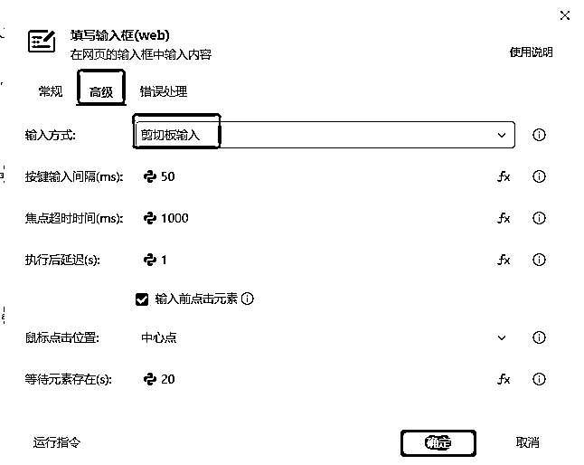
继续添加【填入输入框】流程，填入当前循环中的故事主题，输入内容选择当前循环中获取得到的数据表单元格内容。由于是填入同一个输入框，记得勾选【追加输入】。
选中下图红框中的 python 图标，由于上面采用了读取 CSV 格式的方式读取故事主题，RPA 软件获取到是一组以逗号分割字符串，通过打印调试，我们可以查看到单次获取到的内容是一个数组格式的字符串。
因此采用python语法获取本次故事主题，输入内容： store_list[loop_index-1][0]
store_list[loop_index-1]表示本次循环索引对应的故事主题
后面的[0]表示数组里第一个值
如果对编程知识认识较浅，理解起来可能有点费劲，建议直接填入即可。
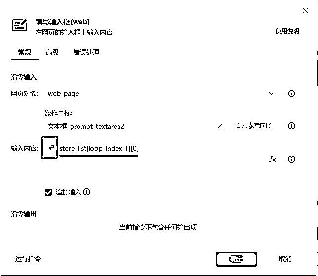
添加【点击元素】，捕捉确定提交的按钮。
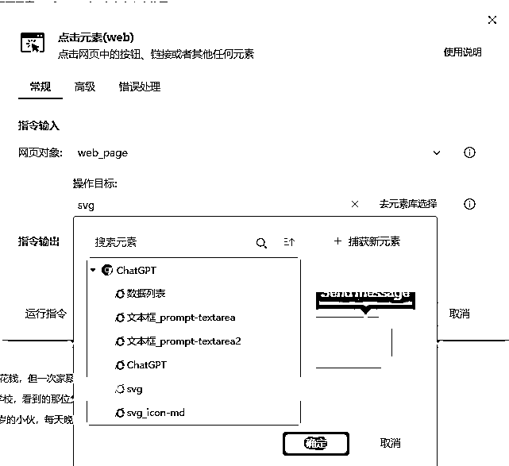
通常 ChatGPT3.5 回答比较快，4.0 回答比较慢，根据模型设置对应的等待时间，3.5 设置 10 - 20 秒即可，4.0 设置 1分钟左右。
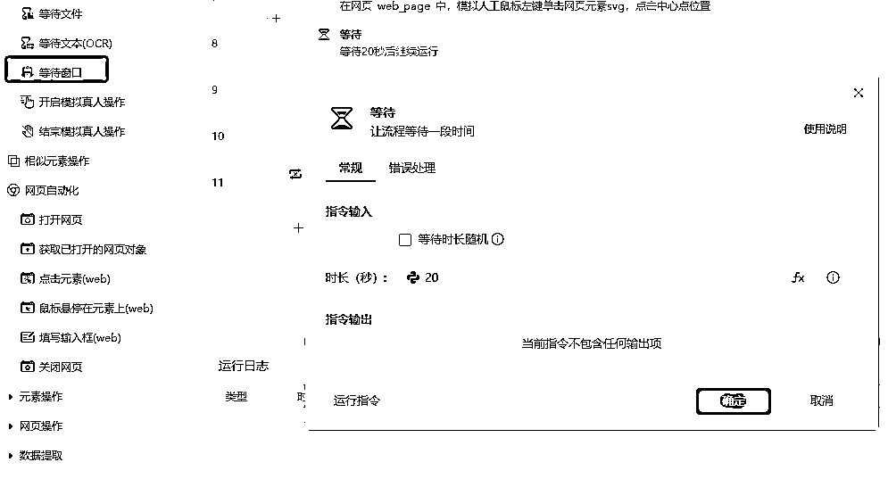
采用【批量数据抓取】指令提取提问与回答的内容，后续进行导出处理。
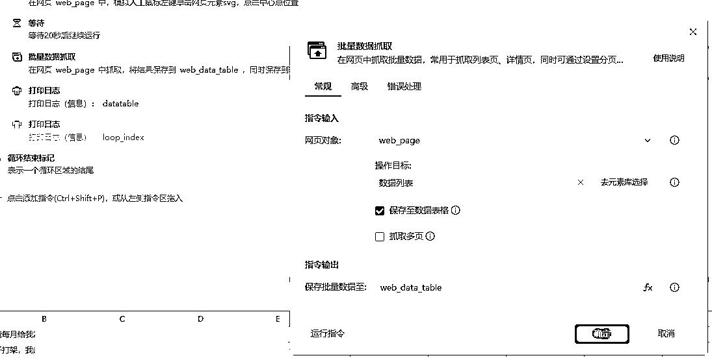
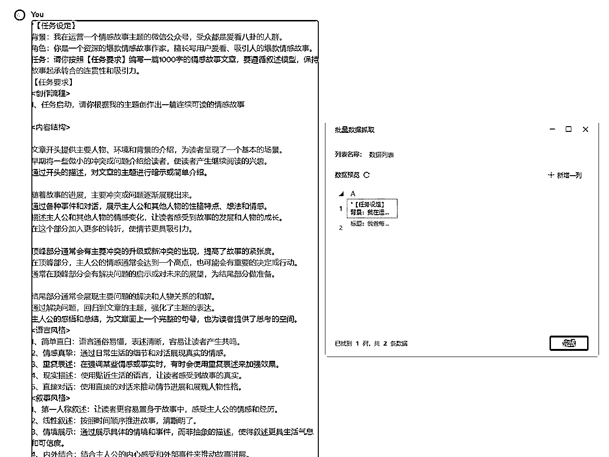
到上面一步，基本上已完成自动化任务的执行，等待任务完成即可。最后的工作将是导出回答内容。
采用【数据表格导出】指令，导出到指定文件夹即可。
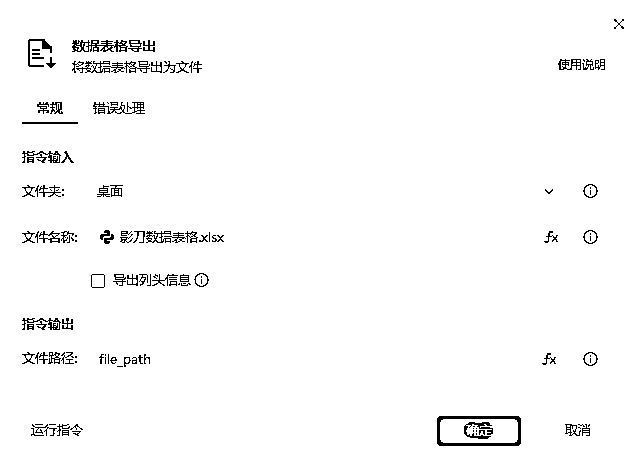
效果如下：
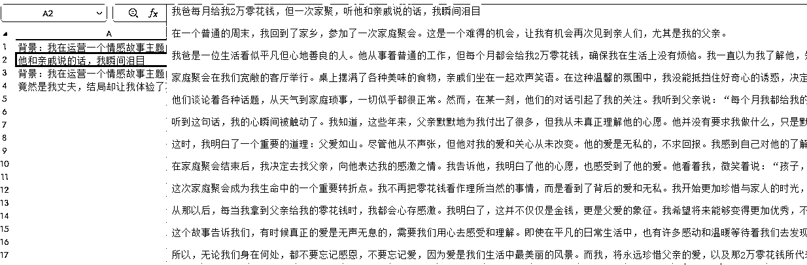
最后展现一个整体的流程图。
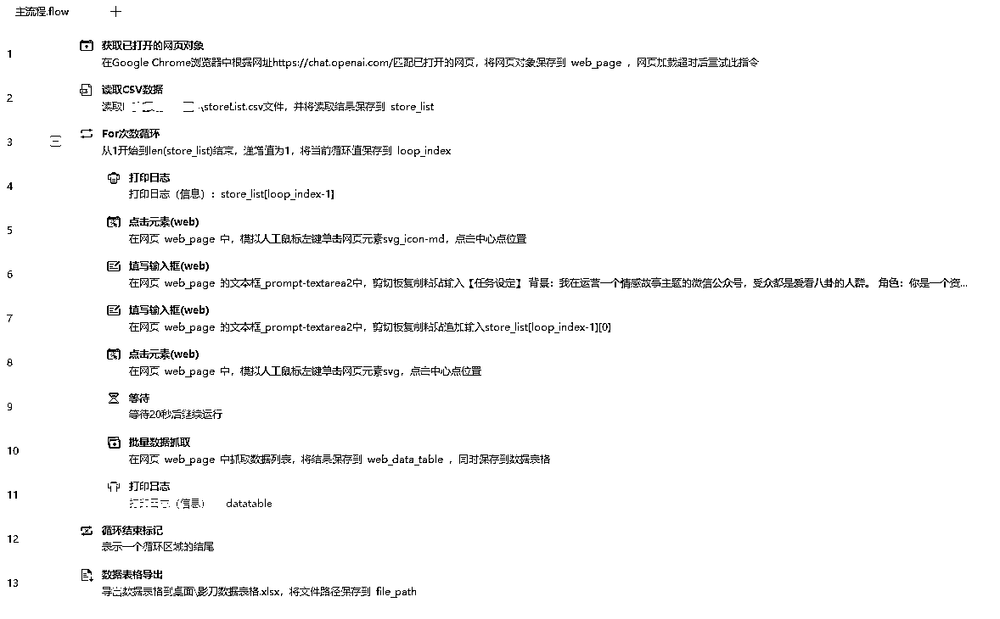
本文只是通过一个简单的例子分享如何利用影刀 + ChatGPT 把输入提示词生成文章这一部分通过机器人去操作，减少日常工作中的重复性任务。影刀的功能不止如此，如果把思路扩散出去，还能利用影刀做自动化全平台分发、批量扩写或润色文章、批量抓取爆文内容、接入 python 做内容管理等等。
大家如果对影刀 RPA 的基础操作有任何疑问，欢迎提出。
最后非常感谢生财提供的平台，让我认识到很多优秀的人，也开阔了视野。我们常说的提效，好好利用平台就是最大的提效。
如果帖子哪里写得不好欢迎指导建议，有问题也欢迎提问。